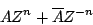
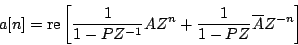
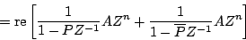
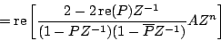
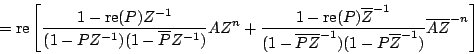
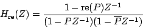
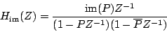

Next: Designing filters
Up: Elementary filters
Previous: Real outputs from complex
Contents
Index
When pairing recirculating elementary filters, it is possible to avoid
computing one of each pair, as long as the input is real-valued (and so,
the output is as well.) Supposing the input is a real sinusoid of the form:

and we apply a single recirculating filter with coefficient  . Letting
. Letting ![$a[n]$](img503.png) denote the real part of the output, we have:
denote the real part of the output, we have:




(In the second step we used the fact that you can conjugate all or part of an
expression, without changing the result, if you're just going to take the real
part anyway. The fourth step did the same thing backward.) Comparing the input
to the output, we see that the effect of passing a real signal through a complex
one-pole filter, then taking the real part, is equivalent to passing the signal
through a two-pole, one-zero filter with transfer function equal to:

A similar calculation shows that taking the imaginary part (considered as a real
signal) is equivalent to filtering the input with the transfer function:

So taking either the real or imaginary part of a one-pole filter output gives
filters with two conjugate poles. The two parts can be combined
to synthesize filters with other possible numerators; in other words, with
one complex recirculating filter we can synthesize a filter that acts on
real signals with two (complex conjugate) poles and one (real) zero.
This technique, known as
partial fractions, may be repeated for
any number of stages in series as long as we compute the appropriate
combination of real and imaginary parts of the output of each stage to
form the (real) input of the next stage.
No similar shortcut seems to exist for non-recirculating filters; for them
it is necessary to compute each member of each complex-conjugate pair
explicitly.
Next: Designing filters
Up: Elementary filters
Previous: Real outputs from complex
Contents
Index
Miller Puckette
2006-12-30